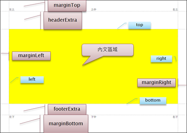
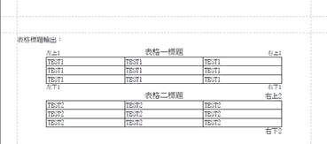

概述
如PDF、WORD之類的文件，是複雜度最高的一種的產出格式。
一份完整的文件，包含封面、目錄、內頁等組成部份。而一般報表類型產出，就只需處理內頁。
文件各組成部分的主要差異，是不同的頁面版型及頁碼原則。例如封面頁通常沒有頁碼、目錄頁的頁碼可能會與內頁分別計算。
頁面版型結構
在此統一定義頁面組成及各元素輸出的基準位置，以下用橫式A4頁面為例說明。

頁首 PageHeader
圖中上方區域，每頁重複的部分，常用於輸出公用資訊如製表時間、報表/文件名稱、頁碼等。一般 API 工具定義這部分空間的高度為 top(圖中藍底標注值)。實際輸出頁首內容時，通常會加上一段留白以保持美觀或供輸出其它內容運用。UDE-Report 中，定義頁首內容實際輸出的底端到頁面上緣的距璃為 marginTop ；留白高度為 headerExtra，預設為 6 pixel 。
頁尾 PageFooter
圖中下方區域，每頁重複的部分，常用於輸出每頁資訊如頁碼、註腳。一般 API 工具定義這部分空間參考值為 bottom(圖中藍底標注值)。實際輸出頁尾內容時，通常會加上一段留白以保持美觀或供輸出其它內容運用。UDE-Report 中，定義頁首內容實際輸出的底端到頁面上緣的距璃為 marginBottom ；留白高度為 footerExtra，預設為 6 pixel 。
內文區域
圖中由藍底的4個定位值 (top、bottom、left、rigth) 所框起來的黃色區域，即是內文區。
表格 (Table)
產出類型為報表資料時的主體內容。以文件輸出表格時，顯示格式的彈性會較試算表為自由。
表首/標題 TableHeader
與表格相關的公用資訊，如輸出清單表格時，此處可顯示條件摘要。可以在每一頁重複出現，也可以只在一開始輸出一次。
與文件頁首略有不同的地方是：文件頁首位置固定；而表格標題則是跟著表格位置輸出，同一張表輸出多次，就有多個。
表頭 ColumnHeader
與欄位資料對應的標題列，通常每一頁重複出現。
但輸出為試算表格式時，則只在一開始輸出一次。表身
- ColumnBody ： 資料內容。
- GroupHeader
- GroupFooter
表尾 TableFooter
也可定義是否每頁重複(內容可變) ，或只出現在最末。
PDF (itext)
以 itext 產製 PDF 文件的基本步驟為建立 Dodument、PdfWriter物件，並使用相關 methods 進行內容輸出。 UDE-Report 套件已包裝所有文件開關流程。
使用基本 API
@Test
public void testCreatePDF() throws IOException {
final PDFDocumentManager documentManager = getDocumentManager();
final File file = createFileByTestName(DocumentFormat.PDF);
try (PDFDocument pdfDocument = documentManager.createPDFDocument(file, PageSize.A5)) {
pdfDocument.writeText("TEST");
}
}
繼承 AbstractPDFGenerator
繼承並實作 generatePDFContent(PDFDocument pdfDocument)，可以得到更多關於LAYOUT、HEADER、FOOTER、分節的控制支援。最後呼叫 generatePDF(...) 即可產出PDF：
void generatePDF(PDFDocumentManager, File)
void generatePDF(PDFDocumentManager, OutputStream)
MS Word
UDEReport 尚未支援 WORD 格式輸出。